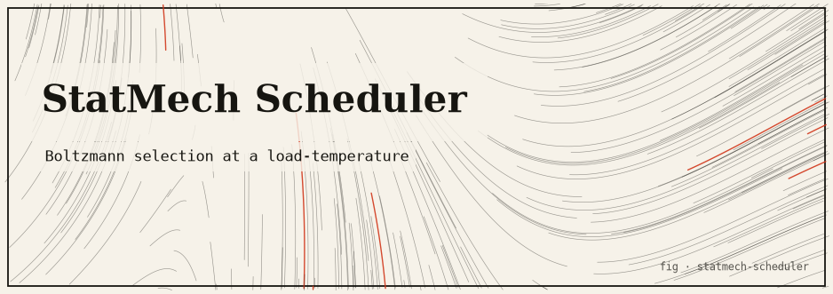

Stat-Mech Scheduler
A simulation-only CPU scheduler where tasks are particles with energy, the system has a temperature, and scheduling decisions are drawn from Boltzmann weights.

The idea
Statistical mechanics describes how particles in a heat bath distribute over energy levels according to the Boltzmann distribution: low-energy states are exponentially more likely at low temperature, while at high temperature all states become roughly equally likely (maximum disorder). This package asks a playful question with a serious core: what if a CPU scheduler used that same distribution to pick the next task to run?
At low system temperature the scheduler becomes nearly deterministic, almost always picking the lowest-energy (highest-priority) task. At high temperature it randomises, giving each task a chance proportional to its Boltzmann weight. Lowering the temperature over the course of a run mimics simulated annealing — explore broadly while hot, commit to priorities while cool.
The Boltzmann distribution in one paragraph
For a system in thermal equilibrium at temperature T, the probability of finding it in a state with energy E is proportional to the Boltzmann factor exp(−E / kT), where k is Boltzmann’s constant. The full probability is that factor divided by the sum over all states (the partition function), so the values form a valid distribution that adds to one. The key intuition lives in the ratio between two states: it depends only on their energy difference and the temperature. When kT is small compared with that gap, the lower-energy state dominates overwhelmingly; when kT is large, the exponential flattens and the states are chosen almost uniformly. This is exactly the numerically-stable “softmax over −E/T” that shows up across physics, machine learning, and optimisation.
Reading it as a control knob: temperature trades off exploitation (pick the best known option) against exploration (sample widely, including poor options). That trade-off is the whole reason the distribution is useful far outside a literal gas of particles.
How this project demonstrates it
The scheduler assigns each task an energy Ei, where lower energy means higher priority. Instead of always running the top-priority task, it computes a Boltzmann weight wi = exp(−Ei / T) for every runnable task and selects one with probability wi / Σ wj. Here the constant k is folded into the units of T (effectively k = 1), so T alone controls how sharply priority is enforced.
The result is a single dial that sweeps between two familiar regimes. As T → 0 the scheduler collapses to strict priority scheduling — the classic greedy pick. As T grows large it approaches round-robin-like uniform randomness. In between, it gives lower-priority tasks a real but small chance to run, which is a natural way to reduce starvation. The sample run at T = 1.0 shows this concretely: the highest-priority task is chosen most of the time, but not always.
The mathematics
Task i has energy E_i (lower = higher priority) Boltzmann weight: w_i = exp(-E_i / T) Selection probability: P_i = w_i / Σ_j w_j System temperature T: Low T → near-deterministic, picks lowest energy task High T → uniform random selection T → 0 → pure priority scheduling
Stat-mech scheduler questions
What is the Boltzmann distribution?
In statistical mechanics it gives the probability of a system occupying a state of energy E at temperature T: p is proportional to exp(−E/kT). Low-energy states are far more likely when T is small, and as T rises all states become comparably likely.
How does temperature change scheduling behaviour?
At low T the weights exp(−E/T) strongly favour the lowest-energy, highest-priority task, so selection is nearly deterministic. At high T the weights flatten out and every task gets a near-equal chance, giving exploratory, randomised scheduling.
What does this have to do with simulated annealing?
Simulated annealing starts hot — accepting many random moves to explore — then cools to become greedy. Lowering the scheduler’s temperature over time reproduces that schedule: broad exploration early, priority-driven exploitation later.
Honest caveat: the “energy” here is just an arbitrary priority score, not a physical energy in joules, and k is set to 1 so temperature is dimensionless. This is a simulation to illustrate the distribution, not a proposal to replace a real OS scheduler — production schedulers optimise for latency, fairness, and cache locality with far more constraints than a single Boltzmann weight.
Run it
git clone https://github.com/caelum0x/awesome-mad-projects.git cd statmech-scheduler go test ./... go run . # Sample output at T=1.0: # Task A (E=1.0): selected 61% # Task B (E=2.0): selected 22% # Task C (E=3.5): selected 17%